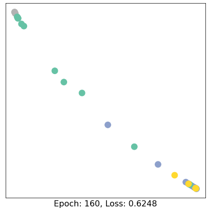
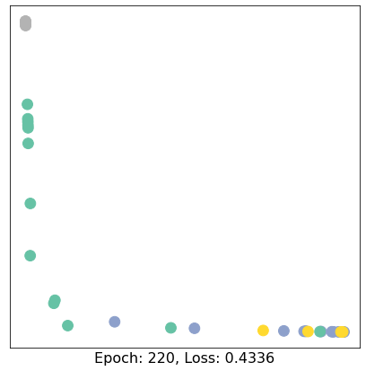
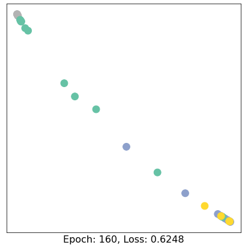
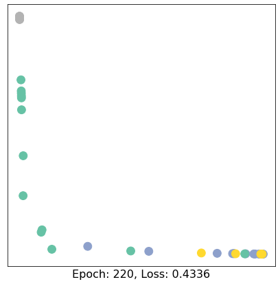

HW0
Contents
HW0¶
Colab 0 will not be graded, so you don’t need to hand in this notebook. That said, we highly recommend you to run this notebook, so you can get familiar with the basic concepts of graph mining and Graph Neural Networks.
In this Colab, we will introduce two packages, NetworkX and PyTorch Geometric.
For the PyTorch Geometric section, you don’t need to understand all the details already. Concepts and implementations of graph neural network will be covered in future lectures and Colabs.
Please make a copy before you proceed.
Libraries/Packages¶
NetworkX¶
NetworkX documentation: ‘NetworkX is a Python package for the creation, manipulation, and study of the structure, dynamics, and functions of complex networks. It provides:
tools for the study of the structure and dynamics of social, biological, and infrastructure networks;
a standard programming interface and graph implementation that is suitable for many applications;
a rapid development environment for collaborative, multidisciplinary projects;
an interface to existing numerical algorithms and code written in C, C++, and FORTRAN; and
the ability to painlessly work with large nonstandard data sets.
With NetworkX you can load and store networks in standard and nonstandard data formats, generate many types of random and classic networks, analyze network structure, build network models, design new network algorithms, draw networks, and much more.’
PyTorch Geometric (PyG)¶
PyG documentation: ‘PyG (PyTorch Geometric) is a library built upon PyTorch to easily write and train Graph Neural Networks (GNNs) for a wide range of applications related to structured data.
It consists of various methods for deep learning on graphs and other irregular structures, also known as geometric deep learning, from a variety of published papers. In addition, it consists of easy-to-use mini-batch loaders for operating on many small and single giant graphs, multi GPU-support, distributed graph learning via Quiver, a large number of common benchmark datasets (based on simple interfaces to create your own), the GraphGym experiment manager, and helpful transforms, both for learning on arbitrary graphs as well as on 3D meshes or point clouds.’
NetworkX Tutorial¶
NetworkX is one of the most frequently used Python packages to create, manipulate, and mine graphs.
Main parts of this tutorial are adapted from https://colab.research.google.com/github/jdwittenauer/ipython-notebooks/blob/master/notebooks/libraries/NetworkX.ipynb#scrollTo=zA1OO6huHeV6
Setup¶
# Import the NetworkX package
import networkx as nx
Graph¶
NetworkX provides several classes to store different types of graphs, such as directed and undirected graph. It also provides classes to create multigraphs (both directed and undirected).
For more information, please refer to NetworkX graph types.
# Create an undirected graph G
G = nx.Graph()
print(G.is_directed())
# Create a directed graph H
H = nx.DiGraph()
print(H.is_directed())
# Add graph level attribute
G.graph["Name"] = "Bar"
print(G.graph)
False
True
{'Name': 'Bar'}
Node¶
Nodes (with attributes) can be easily added to NetworkX graphs.
# Add one node with node level attributes
G.add_node(0, feature=0, label=0)
# Get attributes of the node 0
node_0_attr = G.nodes[0]
print("Node 0 has the attributes {}".format(node_0_attr))
Node 0 has the attributes {'feature': 0, 'label': 0}
# Add multiple nodes with attributes
G.add_nodes_from([
(1, {"feature": 1, "label": 1}),
(2, {"feature": 2, "label": 2})
])
# Loop through all the nodes
# Set data=True will return node attributes
for node in G.nodes(data=True):
print(node)
# Get number of nodes
num_nodes = G.number_of_nodes()
print("G has {} nodes".format(num_nodes))
(0, {'feature': 0, 'label': 0})
(1, {'feature': 1, 'label': 1})
(2, {'feature': 2, 'label': 2})
G has 3 nodes
Edge¶
Similar to nodes, edges (with attributes) can also be easily added to NetworkX graphs.
# Add one edge with edge weight 0.5
G.add_edge(0, 1, weight=0.5)
# Get attributes of the edge (0, 1)
edge_0_1_attr = G.edges[(0, 1)]
print("Edge (0, 1) has the attributes {}".format(edge_0_1_attr))
Edge (0, 1) has the attributes {'weight': 0.5}
# Add multiple edges with edge weights
G.add_edges_from([
(1, 2, {"weight": 0.3}),
(2, 0, {"weight": 0.1})
])
# Loop through all the edges
# Here there is no data=True, so only the edge will be returned
for edge in G.edges():
print(edge)
# Get number of edges
num_edges = G.number_of_edges()
print("G has {} edges".format(num_edges))
(0, 1)
(0, 2)
(1, 2)
G has 3 edges
Visualization¶
# Draw the graph
nx.draw(G, with_labels = True)
Node Degree and Neighbor¶
node_id = 1
# Degree of node 1
print("Node {} has degree {}".format(node_id, G.degree[node_id]))
# Get neighbor of node 1
for neighbor in G.neighbors(node_id):
print("Node {} has neighbor {}".format(node_id, neighbor))
Node 1 has degree 2
Node 1 has neighbor 0
Node 1 has neighbor 2
Other Functionalities¶
NetworkX also provides plenty of useful methods to study graphs.
Here is an example to get PageRank of nodes (we will talk about PageRank in one of the future lectures).
num_nodes = 4
# Create a new path like graph and change it to a directed graph
G = nx.DiGraph(nx.path_graph(num_nodes))
nx.draw(G, with_labels = True)
# Get the PageRank
pr = nx.pagerank(G, alpha=0.8)
pr
{0: 0.17857162031103999,
1: 0.32142837968896,
2: 0.32142837968896,
3: 0.17857162031103999}
Documentation¶
You can explore more NetworkX functions through its documentation.
PyTorch Geometric Tutorial¶
PyTorch Geometric (PyG) is an extension library for PyTorch. It provides useful primitives to develop Graph Deep Learning models, including various graph neural network layers and a large number of benchmark datasets.
Don’t worry if you don’t understand some concepts such as GCNConv – we will cover all of them in the future lectures :)
This tutorial is adapted from https://colab.research.google.com/drive/1h3-vJGRVloF5zStxL5I0rSy4ZUPNsjy8?usp=sharing#scrollTo=ci-LpZWhRJoI by Matthias Fey
import torch
print("PyTorch has version {}".format(torch.__version__))
---------------------------------------------------------------------------
ModuleNotFoundError Traceback (most recent call last)
Input In [10], in <cell line: 1>()
----> 1 import torch
2 print("PyTorch has version {}".format(torch.__version__))
ModuleNotFoundError: No module named 'torch'
Setup¶
The installation of PyG on Colab can be a little bit tricky. Execute the cell below – in case of issues, more information can be found on the PyG’s installation page.
# Install torch geometric
# !pip install -q torch-scatter -f https://pytorch-geometric.com/whl/torch-1.7.0+cu101.html
# !pip install -q torch-sparse -f https://pytorch-geometric.com/whl/torch-1.7.0+cu101.html
# !pip install -q torch-geometric
Visualization¶
# Helper function for visualization.
%matplotlib inline
import torch
import networkx as nx
import matplotlib.pyplot as plt
# Visualization function for NX graph or PyTorch tensor
def visualize(h, color, epoch=None, loss=None):
plt.figure(figsize=(7,7))
plt.xticks([])
plt.yticks([])
if torch.is_tensor(h):
h = h.detach().cpu().numpy()
plt.scatter(h[:, 0], h[:, 1], s=140, c=color, cmap="Set2")
if epoch is not None and loss is not None:
plt.xlabel(f'Epoch: {epoch}, Loss: {loss.item():.4f}', fontsize=16)
else:
nx.draw_networkx(G, pos=nx.spring_layout(G, seed=42), with_labels=False,
node_color=color, cmap="Set2")
plt.show()
Introduction¶
Recently, deep learning on graphs has emerged to one of the hottest research fields in the deep learning community. Here, Graph Neural Networks (GNNs) aim to generalize classical deep learning concepts to irregular structured data (in contrast to images or texts) and to enable neural networks to reason about objects and their relations.
This tutorial will introduce you to some fundamental concepts regarding deep learning on graphs via Graph Neural Networks based on the PyTorch Geometric (PyG) library. PyTorch Geometric is an extension library to the popular deep learning framework PyTorch, and consists of various methods and utilities to ease the implementation of Graph Neural Networks.
Following Kipf et al. (2017), let’s dive into the world of GNNs by looking at a simple graph-structured example, the well-known Zachary’s karate club network. This graph describes a social network of 34 members of a karate club and documents links between members who interacted outside the club. Here, we are interested in detecting communities that arise from the member’s interaction.
Dataset¶
PyTorch Geometric provides an easy access to the dataset via the torch_geometric.datasets subpackage:
from torch_geometric.datasets import KarateClub
dataset = KarateClub()
print(f'Dataset: {dataset}:')
print('======================')
print(f'Number of graphs: {len(dataset)}')
print(f'Number of features: {dataset.num_features}')
print(f'Number of classes: {dataset.num_classes}')
Dataset: KarateClub():
======================
Number of graphs: 1
Number of features: 34
Number of classes: 4
After initializing the KarateClub dataset, we first can inspect some of its properties.
For example, we can see that this dataset holds exactly one graph, and that each node in this dataset is assigned a 34-dimensional feature vector (which uniquely describes the members of the karate club).
Furthermore, the graph holds exactly 4 classes, which represent the community each node belongs to.
Let’s now look at the underlying graph in more detail:
data = dataset[0] # Get the first graph object.
print(data)
print('==============================================================')
# Gather some statistics about the graph.
print(f'Number of nodes: {data.num_nodes}')
print(f'Number of edges: {data.num_edges}')
print(f'Average node degree: {data.num_edges / data.num_nodes:.2f}')
print(f'Number of training nodes: {data.train_mask.sum()}')
print(f'Training node label rate: {int(data.train_mask.sum()) / data.num_nodes:.2f}')
print(f'Contains isolated nodes: {data.contains_isolated_nodes()}')
print(f'Contains self-loops: {data.contains_self_loops()}')
print(f'Is undirected: {data.is_undirected()}')
Data(x=[34, 34], edge_index=[2, 156], y=[34], train_mask=[34])
==============================================================
Number of nodes: 34
Number of edges: 156
Average node degree: 4.59
Number of training nodes: 4
Training node label rate: 0.12
Contains isolated nodes: False
Contains self-loops: False
Is undirected: True
/Users/chandrasingh/opt/anaconda3/envs/fast/lib/python3.8/site-packages/torch_geometric/deprecation.py:12: UserWarning: 'contains_isolated_nodes' is deprecated, use 'has_isolated_nodes' instead
warnings.warn(out)
/Users/chandrasingh/opt/anaconda3/envs/fast/lib/python3.8/site-packages/torch_geometric/deprecation.py:12: UserWarning: 'contains_self_loops' is deprecated, use 'has_self_loops' instead
warnings.warn(out)
Data¶
Each graph in PyTorch Geometric is represented by a single Data object, which holds all the information to describe its graph representation.
We can print the data object anytime via print(data) to receive a short summary about its attributes and their shapes:
Data(edge_index=[2, 156], x=[34, 34], y=[34], train_mask=[34])
We can see that this data object holds 4 attributes:
(1) The edge_index property holds the information about the graph connectivity, i.e., a tuple of source and destination node indices for each edge.
PyG further refers to (2) node features as x (each of the 34 nodes is assigned a 34-dim feature vector), and to (3) node labels as y (each node is assigned to exactly one class).
(4) There also exists an additional attribute called train_mask, which describes for which nodes we already know their community assigments.
In total, we are only aware of the ground-truth labels of 4 nodes (one for each community), and the task is to infer the community assignment for the remaining nodes.
The data object also provides some utility functions to infer some basic properties of the underlying graph.
For example, we can easily infer whether there exists isolated nodes in the graph (i.e. there exists no edge to any node), whether the graph contains self-loops (i.e., \((v, v) \in \mathcal{E}\)), or whether the graph is undirected (i.e., for each edge \((v, w) \in \mathcal{E}\) there also exists the edge \((w, v) \in \mathcal{E}\)).
from IPython.display import Javascript # Restrict height of output cell.
display(Javascript('''google.colab.output.setIframeHeight(0, true, {maxHeight: 300})'''))
edge_index = data.edge_index
print(edge_index.t())
tensor([[ 0, 1],
[ 0, 2],
[ 0, 3],
[ 0, 4],
[ 0, 5],
[ 0, 6],
[ 0, 7],
[ 0, 8],
[ 0, 10],
[ 0, 11],
[ 0, 12],
[ 0, 13],
[ 0, 17],
[ 0, 19],
[ 0, 21],
[ 0, 31],
[ 1, 0],
[ 1, 2],
[ 1, 3],
[ 1, 7],
[ 1, 13],
[ 1, 17],
[ 1, 19],
[ 1, 21],
[ 1, 30],
[ 2, 0],
[ 2, 1],
[ 2, 3],
[ 2, 7],
[ 2, 8],
[ 2, 9],
[ 2, 13],
[ 2, 27],
[ 2, 28],
[ 2, 32],
[ 3, 0],
[ 3, 1],
[ 3, 2],
[ 3, 7],
[ 3, 12],
[ 3, 13],
[ 4, 0],
[ 4, 6],
[ 4, 10],
[ 5, 0],
[ 5, 6],
[ 5, 10],
[ 5, 16],
[ 6, 0],
[ 6, 4],
[ 6, 5],
[ 6, 16],
[ 7, 0],
[ 7, 1],
[ 7, 2],
[ 7, 3],
[ 8, 0],
[ 8, 2],
[ 8, 30],
[ 8, 32],
[ 8, 33],
[ 9, 2],
[ 9, 33],
[10, 0],
[10, 4],
[10, 5],
[11, 0],
[12, 0],
[12, 3],
[13, 0],
[13, 1],
[13, 2],
[13, 3],
[13, 33],
[14, 32],
[14, 33],
[15, 32],
[15, 33],
[16, 5],
[16, 6],
[17, 0],
[17, 1],
[18, 32],
[18, 33],
[19, 0],
[19, 1],
[19, 33],
[20, 32],
[20, 33],
[21, 0],
[21, 1],
[22, 32],
[22, 33],
[23, 25],
[23, 27],
[23, 29],
[23, 32],
[23, 33],
[24, 25],
[24, 27],
[24, 31],
[25, 23],
[25, 24],
[25, 31],
[26, 29],
[26, 33],
[27, 2],
[27, 23],
[27, 24],
[27, 33],
[28, 2],
[28, 31],
[28, 33],
[29, 23],
[29, 26],
[29, 32],
[29, 33],
[30, 1],
[30, 8],
[30, 32],
[30, 33],
[31, 0],
[31, 24],
[31, 25],
[31, 28],
[31, 32],
[31, 33],
[32, 2],
[32, 8],
[32, 14],
[32, 15],
[32, 18],
[32, 20],
[32, 22],
[32, 23],
[32, 29],
[32, 30],
[32, 31],
[32, 33],
[33, 8],
[33, 9],
[33, 13],
[33, 14],
[33, 15],
[33, 18],
[33, 19],
[33, 20],
[33, 22],
[33, 23],
[33, 26],
[33, 27],
[33, 28],
[33, 29],
[33, 30],
[33, 31],
[33, 32]])
Edge Index¶
By printing edge_index, we can further understand how PyG represents graph connectivity internally.
We can see that for each edge, edge_index holds a tuple of two node indices, where the first value describes the node index of the source node and the second value describes the node index of the destination node of an edge.
This representation is known as the COO format (coordinate format) commonly used for representing sparse matrices. Instead of holding the adjacency information in a dense representation \(\mathbf{A} \in \{ 0, 1 \}^{|\mathcal{V}| \times |\mathcal{V}|}\), PyG represents graphs sparsely, which refers to only holding the coordinates/values for which entries in \(\mathbf{A}\) are non-zero.
We can further visualize the graph by converting it to the networkx library format, which implements, in addition to graph manipulation functionalities, powerful tools for visualization:
from torch_geometric.utils import to_networkx
G = to_networkx(data, to_undirected=True)
visualize(G, color=data.y)
Implementing Graph Neural Networks¶
After learning about PyG’s data handling, it’s time to implement our first Graph Neural Network!
For this, we will use one of the most simple GNN operators, the GCN layer (Kipf et al. (2017)).
PyG implements this layer via GCNConv, which can be executed by passing in the node feature representation x and the COO graph connectivity representation edge_index.
With this, we are ready to create our first Graph Neural Network by defining our network architecture in a torch.nn.Module class:
import torch
from torch.nn import Linear
from torch_geometric.nn import GCNConv
class GCN(torch.nn.Module):
def __init__(self):
super(GCN, self).__init__()
torch.manual_seed(12345)
self.conv1 = GCNConv(dataset.num_features, 4)
self.conv2 = GCNConv(4, 4)
self.conv3 = GCNConv(4, 2)
self.classifier = Linear(2, dataset.num_classes)
def forward(self, x, edge_index):
h = self.conv1(x, edge_index)
h = h.tanh()
h = self.conv2(h, edge_index)
h = h.tanh()
h = self.conv3(h, edge_index)
h = h.tanh() # Final GNN embedding space.
# Apply a final (linear) classifier.
out = self.classifier(h)
return out, h
model = GCN()
print(model)
GCN(
(conv1): GCNConv(34, 4)
(conv2): GCNConv(4, 4)
(conv3): GCNConv(4, 2)
(classifier): Linear(in_features=2, out_features=4, bias=True)
)
Here, we first initialize all of our building blocks in __init__ and define the computation flow of our network in forward.
We first define and stack three graph convolution layers, which corresponds to aggregating 3-hop neighborhood information around each node (all nodes up to 3 “hops” away).
In addition, the GCNConv layers reduce the node feature dimensionality to \(2\), i.e., \(34 \rightarrow 4 \rightarrow 4 \rightarrow 2\). Each GCNConv layer is enhanced by a tanh non-linearity.
After that, we apply a single linear transformation (torch.nn.Linear) that acts as a classifier to map our nodes to 1 out of the 4 classes/communities.
We return both the output of the final classifier as well as the final node embeddings produced by our GNN.
We proceed to initialize our final model via GCN(), and printing our model produces a summary of all its used sub-modules.
model = GCN()
_, h = model(data.x, data.edge_index)
print(f'Embedding shape: {list(h.shape)}')
visualize(h, color=data.y)
Embedding shape: [34, 2]
Remarkably, even before training the weights of our model, the model produces an embedding of nodes that closely resembles the community-structure of the graph. Nodes of the same color (community) are already closely clustered together in the embedding space, although the weights of our model are initialized completely at random and we have not yet performed any training so far! This leads to the conclusion that GNNs introduce a strong inductive bias, leading to similar embeddings for nodes that are close to each other in the input graph.
Training on the Karate Club Network¶
But can we do better? Let’s look at an example on how to train our network parameters based on the knowledge of the community assignments of 4 nodes in the graph (one for each community):
Since everything in our model is differentiable and parameterized, we can add some labels, train the model and observe how the embeddings react. Here, we make use of a semi-supervised or transductive learning procedure: We simply train against one node per class, but are allowed to make use of the complete input graph data.
Training our model is very similar to any other PyTorch model.
In addition to defining our network architecture, we define a loss critertion (here, CrossEntropyLoss) and initialize a stochastic gradient optimizer (here, Adam).
After that, we perform multiple rounds of optimization, where each round consists of a forward and backward pass to compute the gradients of our model parameters w.r.t. to the loss derived from the forward pass.
If you are not new to PyTorch, this scheme should appear familar to you.
Otherwise, the PyTorch docs provide a good introduction on how to train a neural network in PyTorch.
Note that our semi-supervised learning scenario is achieved by the following line:
loss = criterion(out[data.train_mask], data.y[data.train_mask])
While we compute node embeddings for all of our nodes, we only make use of the training nodes for computing the loss.
Here, this is implemented by filtering the output of the classifier out and ground-truth labels data.y to only contain the nodes in the train_mask.
Let us now start training and see how our node embeddings evolve over time (best experienced by explicitely running the code):
import time
from IPython.display import Javascript # Restrict height of output cell.
display(Javascript('''google.colab.output.setIframeHeight(0, true, {maxHeight: 430})'''))
model = GCN()
criterion = torch.nn.CrossEntropyLoss() # Define loss criterion.
optimizer = torch.optim.Adam(model.parameters(), lr=0.01) # Define optimizer.
def train(data):
optimizer.zero_grad() # Clear gradients.
out, h = model(data.x, data.edge_index) # Perform a single forward pass.
loss = criterion(out[data.train_mask], data.y[data.train_mask]) # Compute the loss solely based on the training nodes.
loss.backward() # Derive gradients.
optimizer.step() # Update parameters based on gradients.
return loss, h
for epoch in range(401):
loss, h = train(data)
# Visualize the node embeddings every 10 epochs
if epoch % 10 == 0:
visualize(h, color=data.y, epoch=epoch, loss=loss)
time.sleep(0.3)

 





As one can see, our 3-layer GCN model manages to linearly separating the communities and classifying most of the nodes correctly.
Furthermore, we did this all with a few lines of code, thanks to the PyTorch Geometric library which helped us out with data handling and GNN implementations.
Documentation¶
You can explore more PyG functions through its documentation.